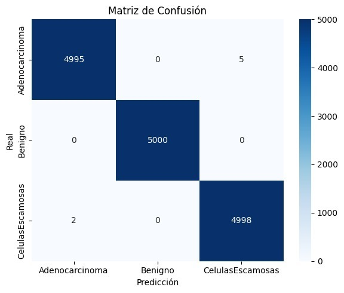
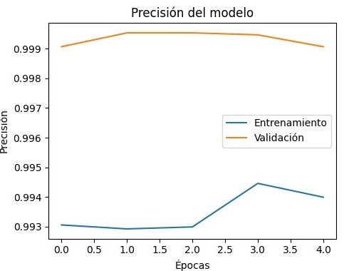

Matriz de confusión

La matriz indica que el modelo funciona excepcionalmente bien, con un número alto de clasificaciones correctas y muy pocas erróneas. Muestra una fortaleza particular en la identificación de casos "Benignos".
Modelo de Precisión

La alta y estable precisión tanto en entrenamiento como en validación es una señal muy positiva, confirmando que el modelo tiene un rendimiento sobresaliente y es confiable para hacer predicciones en el mundo real.